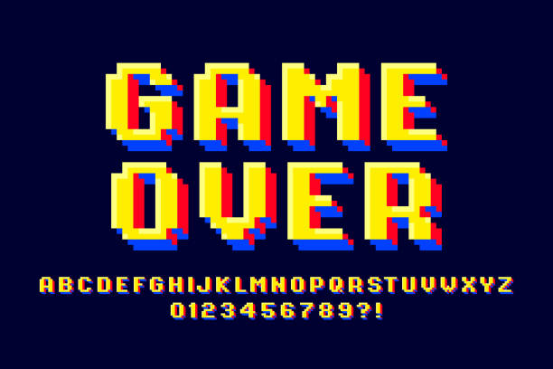
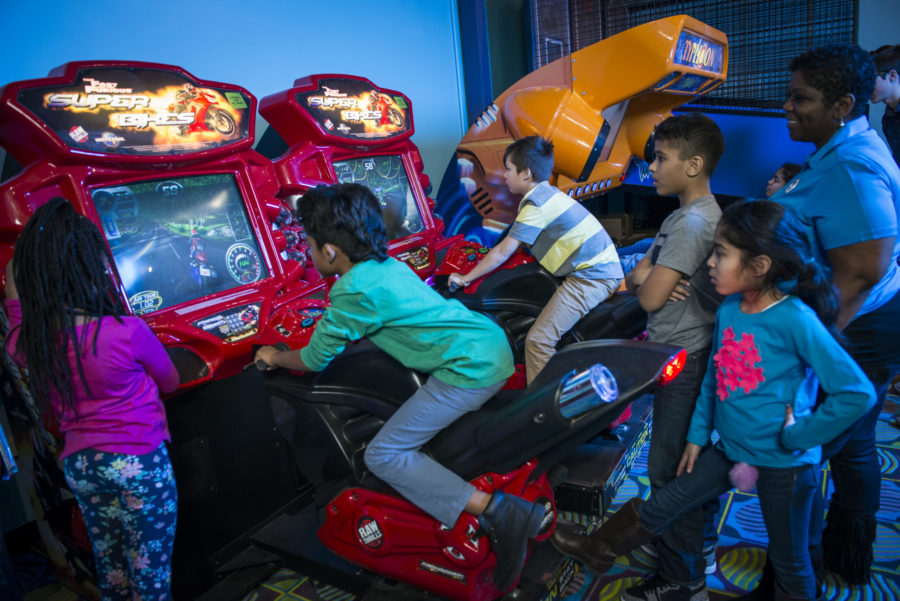

Billy Mac's BurgCade
Welcome to Billy Mac's Arcade Games Page!
Step into a world of nostalgia and excitement as you explore the thrilling array of arcade games at Billy Mac's! From timeless classics to modern favorites, our arcade is packed with fun and entertainment for gamers of all ages.
🎉 Exclusive Token Discount Alert! 🎉
Are you ready to level up your arcade experience? We've got an exciting offer just for you!

Billy Mac's is offering an exclusive discount on tokens! Whether you're a seasoned pro or a casual player, now's your chance to enjoy more gaming for less.
Here's the deal:
Buy 20 Tokens, Get 5 Tokens FREE!
Enoy more rounds of Pac-Man, more epic battles in Street Fighter II, and more high-speed races in Mario Kart Arcade GP on us!
Head on over to Billy Mac's today to take advantage of this deal.
See you at Billy Mac's – where burgers, fries, and gaming fun collide!
Types of Games We Offer:
- Classic Favorites: Relive the glory days of arcade gaming with iconic titles like Pac-Man, Space Invaders, and Donkey Kong. Test your skills, beat high scores, and experience the timeless charm of these beloved classics.
- Action-Packed Adventures: Get ready for heart-pounding action with adrenaline-fueled games like Street Fighter II, Mortal Kombat, and The Simpsons Arcade Game. Battle opponents, unleash powerful combos, and prove your dominance in intense one-on-one combat.
- Racing Excitement: Feel the need for speed with our thrilling selection of racing games, including Mario Kart Arcade GP and high-speed driving simulators. Put the pedal to the metal, drift around corners, and race to victory against friends and rivals.
Our Famous Games:
These arcade games offer a diverse range of experiences and are sure to entertain guests of all ages at Billy Mac's.
Pac-Man
Street Fighter II
Galaga
Donkey Kong
Mortal Kombat
Space Invaders
Dance Dance Revolution
The Simpsons Arcade Game
Ms. Pac-Man
Mario Kart Arcade GP
A timeless classic where players control the iconic yellow character, Pac-Man, as he navigates mazes, eats pellets, avoids ghosts, and tries to clear each level.

This legendary fighting game allows players to choose from a variety of characters, each with their own unique fighting styles, as they battle opponents in one-on-one combat to become the ultimate champion.
A space shooter game where players control a spaceship as they battle waves of alien invaders. The game features fast-paced action, challenging enemy patterns, and bonus stages for extra points.
In this classic platformer, players take on the role of Mario as he attempts to rescue the damsel in distress, Pauline, from the clutches of the giant ape, Donkey Kong. The game features challenging levels filled with obstacles and enemies.
Known for its brutal combat and graphic violence, Mortal Kombat is a fighting game that pits players against each other in intense battles featuring a diverse roster of characters, each with their own deadly finishing moves.
One of the earliest shooting games, Space Invaders tasks players with defending Earth from descending waves of alien invaders. Players must shoot down the aliens while dodging their projectiles to survive as long as possible.
A rhythm and dance game where players step on pressure-sensitive pads in time with the music and on-screen prompts. The game features a variety of songs and difficulty levels, challenging players to perfect their dance moves.
A side-scrolling beat 'em up game based on the popular animated TV series, The Simpsons Arcade Game allows players to control characters like Homer, Marge, Bart, and Lisa as they battle their way through hordes of enemies to rescue Maggie from the evil Mr. Burns.
A sequel to the original Pac-Man, Ms. Pac-Man features similar gameplay but introduces new mazes, faster gameplay, and bonus fruit for players to collect as they try to achieve high scores.
A racing game featuring characters from the Mario universe, Mario Kart Arcade GP lets players choose their favorite characters and race against opponents on colorful tracks filled with power-ups and obstacles, aiming to cross the finish line first.
How to Play:
At Billy Mac's, we offer two options for playing our arcade games: game passes and tokens.
Playing arcade games at Billy Mac's is easy and hassle-free. Simply purchase tokens at the arcade counter, or opt for a game pass for unlimited playtime during your visit. Then, choose your favorite game, insert your tokens, and let the fun begin!
Game Passes:
- Hourly Pass: $10.99 per hour
- Daily Pass: $24.99 per day
With a game pass, guests have unlimited access to all arcade games for the duration of their pass.
Tokens:
- 1 Token: $0.50
- 5 Tokens: $2.00
- 10 Tokens: $3.50
- 20 Tokens: $6.00
Each arcade game requires a specific number of tokens to play, typically ranging from 1 to 4 tokens per game, depending on the game's popularity and complexity.
Whether you're a casual gamer looking to play a few rounds or a dedicated enthusiast ready to spend the day gaming, we have options to suit every player at Billy Mac's!
Family-Friendly Fun:
Step back in time and relive the glory days of arcade gaming at Billy Mac's. With a carefully curated selection of classic and modern arcade games, there's something for everyone to enjoy. Test your skills in timeless favorites like Pac-Man and Street Fighter II, or challenge your friends to a high-stakes race in Mario Kart Arcade GP.
Join Us for Game Night:
Looking for a fun night out with friends? Join us for Game Night at Billy Mac's, where you can compete in tournaments, win prizes, and enjoy special discounts on tokens and game passes. Check our events calendar for upcoming Game Night dates and special promotions.
Visit Us Today:
Ready to level up your gaming experience? Visit Billy Mac's Arcade today and immerse yourself in a world of fun, excitement, and nostalgia. Whether you're a casual gamer or a hardcore enthusiast, there's something for everyone to enjoy at Billy Mac's!
Thank you for choosing Billy Mac's – where every bite is a taste of happiness and every game is a journey back in time. We can't wait to see you soon!